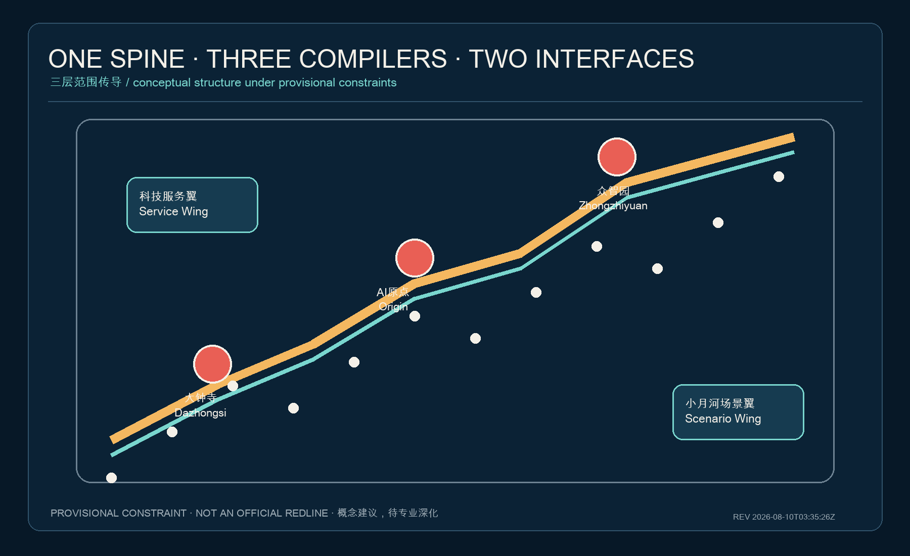
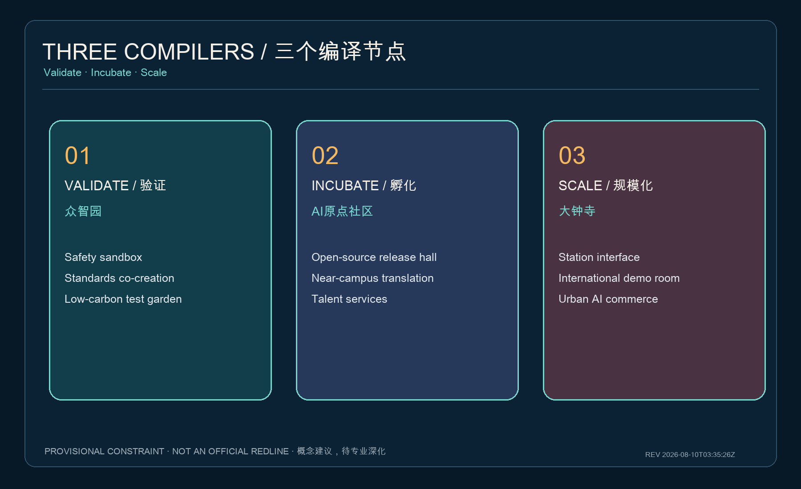
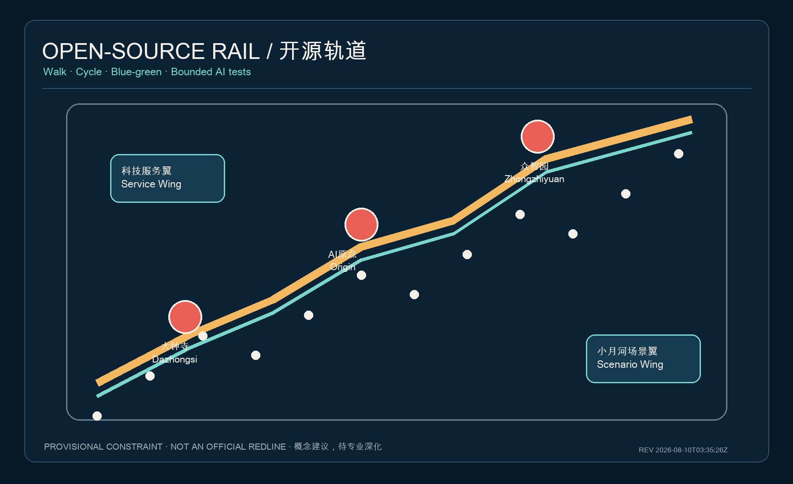
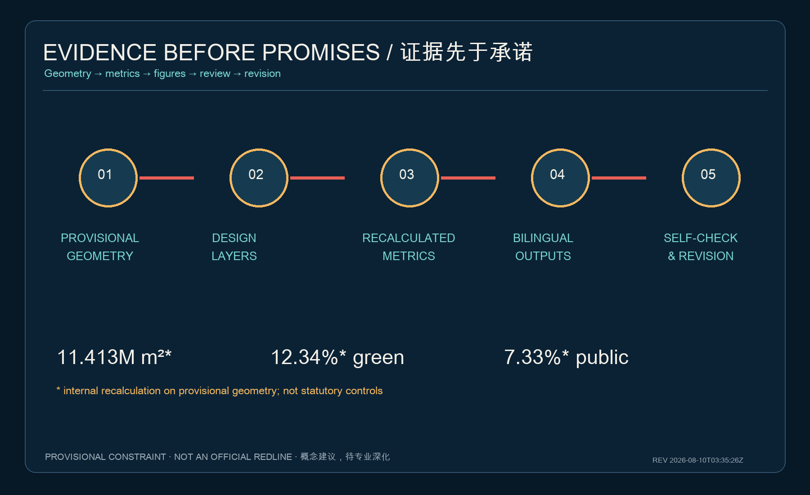

智轨共生带：百年京张 AI 城市开源操作系统
A verifiable open urban operating system using the Jing-Zhang heritage corridor as civic AI infrastructure.
智轨共生带：百年京张 AI 城市开源操作系统
设计依据与资料清单
本方案把京张铁路遗产理解为一套可步行、可验证、可持续运营的公共基础设施，而不是科技园区的装饰性背景。依据包括资格预审公告、智能体任务书、场地包、公开资料登记表及本地专业标准快照 来源 来源 标准。当前总体边界与三处重点区均为仓库提供的临时粗略范围，只用于概念生成与入口自检，不能替代官方红线、法定控规或精确面积结论 空间数据。官方图件补齐后，全部设计图层和指标须统一复算。
设计原则是“遗产为脊、开源为法、场景为证、日常为本”。所有空间动作均为可供专业团队深化的概念建议；容积率、高度、密度、退线、权属与工程线位均待正式资料确认 深度。
三层范围工作框架
43.6 平方公里统筹研究范围用于建立区域创新协同；约 11.4 平方公里总体设计范围用于组织城市更新、交通、蓝绿与产业空间；约 368.4 公顷重点区域用于验证空间、场景和运营机制 指标 深度。方案以“一轴、三核、两翼、百节点”传导三层工作：京张遗址公园为开源轨道；众智园、AI原点社区、大钟寺为验证、孵化、规模化三个编译节点；中关村科技服务翼与小月河场景赋能翼构成资源和测试接口。

这里的空间结构不新增红线，而是把任务书的“三区两翼”转换为可协作的城市设计协议 来源 空间数据。
统筹研究范围产业与未来城市研究
产业组织采用“研究—开源—验证—孵化—规模化—公共反馈”的闭环。参考机制包括：MIT Kendall Square 的产学邻接、Toronto MaRS 的转化平台、Station F 的共享服务、Helsinki Jätkäsaari Mobility Lab 的真实街区测试、Barcelona 22@ 的更新与混合使用、Seoul Digital Media City 的内容产业集聚、Singapore one-north 的园区—社区联动。案例仅作为机制参照，具体适用性须由专业团队与权利主体核验。
转化到京张后，不复制园区形态，而是建立公共测试许可、共享评测设施、近校孵化空间、企业服务接口、贡献者声誉系统和居民反馈回路。五大功能通过同一条开源轨道相互校验：全栈自主创新在众智园验证，创新生态在原点社区孵化，AI+场景在小月河翼测试，活力城市沿遗址公园被公众体验，治理方法以公开审计形成国际交流内容 标准 深度。
总体设计范围城市更新与控规深度城市设计
总体设计不追求一次性推倒重建，而采用“保留可用结构—嵌入开放首层—缝合断点—再评估增量”的更新顺序。用地分区完整覆盖临时边界，用作方案内部复算；建筑层只表达示范性基底，不构成任何具体建筑拆改结论 空间数据 空间数据 深度。
空间设计形成三类界面：面向铁路遗产的公共知识界面、面向街区的日常服务界面、面向产业的可控测试界面。开发强度、建筑高度与密度保持“待正式控规条件补齐”，不以概念值冒充审定指标 标准 深度。
重点区域详细设计
众智园定位为“验证编译器”：设置模型与机器人安全沙盒、标准共创厅、清河低碳测试花园，重点处理产业验证与治理。AI原点社区定位为“开源孵化器”：以校区—园区慢行缝合、成果发布厅、共享评测台和人才生活服务形成近校转化。大钟寺定位为“规模化接口”：围绕轨道站点和四象限步行联系，组织智能终端展示、国际路演、合规数据服务和城市型商业 空间数据 空间数据 空间数据。

三个片区共享同一套“场景准入—限时测试—公众反馈—第三方评测—退出或扩展”的运行协议；道路、建筑、河道、消防和权属条件仍需专业深化 深度。
AI 创新生态、人才画像与 AI+ 场景
五类核心人物为开源开发者、初创团队、头部企业与国际访客、高校师生、周边居民与老年/无障碍使用者。每类人物都对应空间、服务与不被算法强迫的退出权 标准。
十张场景卡为：①开放模型评测站（产业验证）；②机器人共行测试环（产业验证）；③端侧算力与低碳调度台（产业验证）；④AI慢行与无障碍导航；⑤遗产多语导览；⑥近校成果转化助手；⑦企业合规服务台；⑧社区医疗教育法律导航；⑨活动人流人工复核台；⑩贡献者荣誉图谱。每张卡记录服务对象、最小数据、人工复核、空间边界、运营主体与退出机制。前三项只能在限定时段和明确边界内测试，不表述为已批准运营 标准 空间数据。
公共契约要求：默认匿名或聚合、禁止面部识别式持续追踪、关键决定由人复核、异常可一键停用、结果与投诉渠道可解释。
用地、建筑规模与拆改留方案
用地结构以创新研发、公共开放、产业服务与社区配套四类概念分区形成无缝覆盖 空间数据 标准。建筑更新采用“留结构、开首层、补服务、慎增量”四步法：对安全、权属、历史价值、能耗和使用效率进行专业评估后再分类。现阶段建筑基底仅是设计示范，建筑总量、容积率、密度、高度和具体拆改留均不作确定结论 指标 深度。
交通、轨道、市政与公共服务设施
“开源轨道”首先是一条连续、安全、可识别的步行骑行公共空间。策略包括跨环路断点诊断、轨道站点最后一公里、校区园区慢行接口、低速机器人分时共行、非机动车秩序与无障碍全链路。AI只辅助发现冲突和提供导航，不替代交通组织审批 空间数据 深度。

市政层提出可插拔“城市计算舱”：端侧算力、能源计量、环境传感和应急断电集成于可维护节点；部署前须完成能源、消防、网络安全、隐私和运营主体核验 空间数据 深度。
蓝绿空间、公共空间与城市风貌
京张遗址公园与清河、小月河共同构成低碳慢行和海绵空间骨架。临时边界在图中始终以低对比虚线表达，设计重点落在连续路径、东西缝合、可停留节点和三处重点区接口 空间数据 指标 指标。
三个朝圣地标为：清华园“时间道岔”——讲述工程与开放科学；原点社区“开源信号楼”——实时展示经授权的贡献与可复现成果；大钟寺“世界模型站台”——举办国际路演与公众对话。荣誉系统只展示自愿公开且可核验的贡献，不以商业排名替代公共价值 标准 深度。视觉识别以铁路双线与代码分叉组成 RailMind Commons 符号，避免使用未授权企业标识。
更新项目清单、实施政策与分期计划
近期（概念试点）优先完成慢行断点审计、开放场景协议、可移动贡献亭和三处轻量测试；中期在正式控规、权属和工程条件确认后推进站城接口、开放首层与蓝绿缝合；长期形成跨片区运营联盟和年度评估 空间数据 深度。
年度运营采用“一季一循环”：春季开源城市问题榜，夏季受控场景测试，秋季全球 AI 城市周，冬季公开评测与退出清单。开发者社区通过问题认领、数据说明卡、居民共评和可复现记录积累长期资产；招商、资金、政策与活动均为建议机制，不是政府承诺。
项目清单按“无需新增永久建设即可启动、依赖正式规划条件、依赖跨主体长期协同”三级排序。第一类包括步行诊断、导览原型、贡献亭与公开评测；第二类包括站城缝合、建筑首层改造和城市计算舱；第三类包括跨片区运营联盟与国际交流平台。每个项目设置场地主体、运营主体、公众利益、数据需求、停止条件和复盘日期。分期边界是设计建议而非行政实施范围；官方红线、权属、交通、市政、文保、防洪、消防和资金条件缺失时，不进入不可逆建设。空间图层只表达一期可讨论范围，其面积不作为投资规模或征收依据。
指标体系、面积复算与合规矩阵
已知指标均来自提交几何复算：临时总体边界面积约 1141.28 万平方米、绿地概念比例约 12.34%、公共空间概念比例约 7.33%，三处重点区数量为 3；这些数值用于方案内部一致性检查，不是官方面积或法定控制指标 指标 指标 指标。

容积率、高度、密度、退线等保持未知。任务覆盖矩阵逐条连接公告任务、六项智能体任务、章节、图层、图纸和自检；专业标准矩阵与设计深度矩阵保存完整审计证据 深度。
风险、版权与合规说明
首要风险是官方精确边界、控规、现状建筑、权属、道路、市政、文保和防洪资料尚缺；因此所有空间结果均为临时约束下的概念建议。第二类风险是算法偏差、隐私侵害、技术失效和供应商锁定，通过最小数据、人工复核、开放接口、可退出和第三方评测降低。第三类风险是文化符号与图片版权；本包只使用自产图形、本地字体和仓库清权文本 来源 深度。
本方案不声称官方批准、工程可行、投资落实或活动确定。PDF、HTML 和图件是解释层，GeoJSON、JSON 与来源记录是审计层。每次替换正式边界或更新设计图层后，都必须重新计算指标、重绘图件、刷新双语报告并运行完整自检。任何测试一旦出现安全、歧视、隐私或公共空间排他性问题，应暂停而非为了展示效果继续运行。
参考资料
主要资料包括资格预审公告、智能体任务书、场地包、公开资料登记表、城市设计管理办法、控制性详细规划编制审批办法、用地分类指南、无障碍环境建设法和生成式人工智能服务管理暂行办法。完整来源、许可、日期与限制见 sources.json 来源。
参考案例只用于比较运行机制，不用于推导法定边界、面积或控制指标。案例中的机构名称、规模和实施效果在正式深化前需要回到各自官方来源核验。本方案的空间证据以提交目录内 GeoJSON 为准，数值证据以 metrics.json 为准，任务与标准覆盖分别以三个矩阵为准；新闻图片、商业地图、生成式渲染和外部底图均未被用作边界依据。官方任务书附件、精确红线或补遗发布后，应优先替换临时资料并记录版本差异。
---
Package revision / 成果修订时间：2026-08-10T03:35:26Z